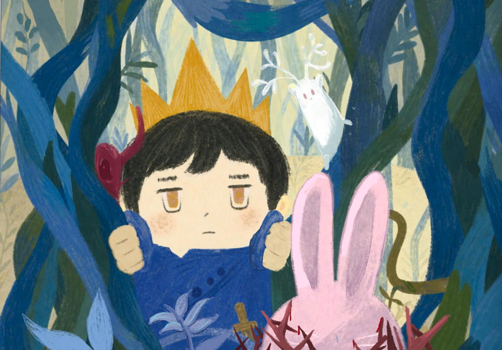
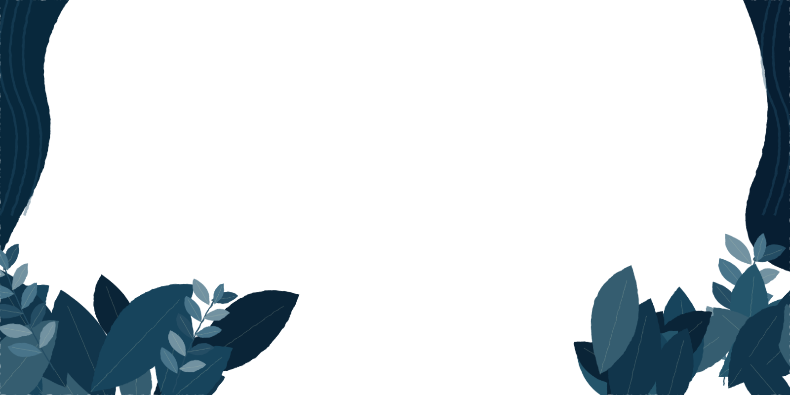
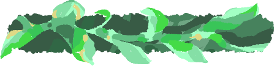

01 Selected project / 04
Inbetween
Two-player narrative adventure
Code · Animation · Narrative
Two spirits. One prince. Every choice leaves a different story behind.
View projectYunxi Wang · PortfolioBring the Spring


Inbetween · Collaborative project · scene artwork by collaboratorFour worlds to wander through
Selected Works · 01—0401 Selected project / 04
Two-player narrative adventure
Code · Animation · Narrative
Two spirits. One prince. Every choice leaves a different story behind.
View project
02 Selected project / 04
Cozy exploration · Unity
Solo project · Code, art & sound
Shake the trees, clear the snow, and carry a little spring back into winter.
View project03 Selected project / 04
Pixel platformer · Game Boy Color
Student team · Assembly & pixel art
A small fox, a tiny cartridge, and a world built one sprite at a time.
View project04 Selected project / 04
Narrative adventure · Concept stage
Solo project · World & visual development
A firefly carries its own light into a world that wants to take it away.
View project